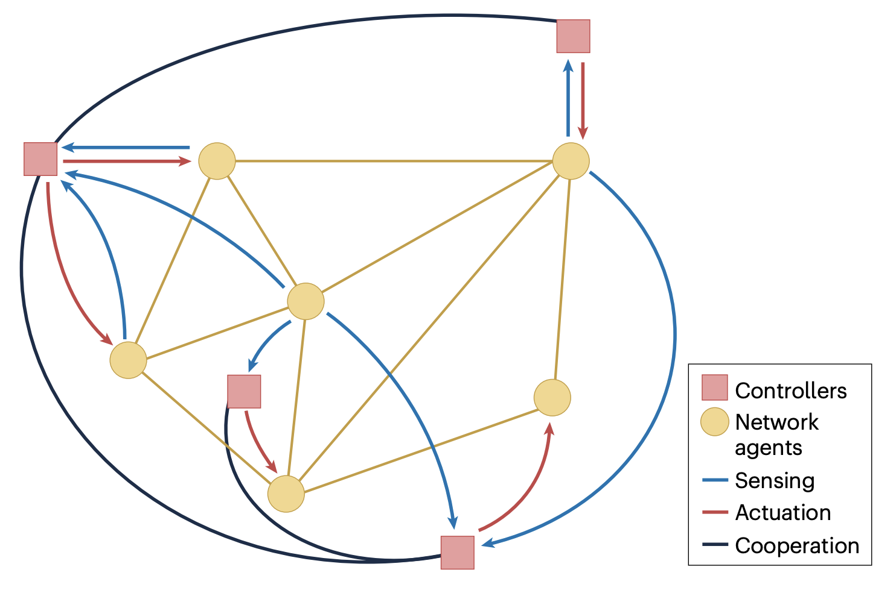

Understanding how network structure shapes collective behavior is fundamental for controlling complex systems. Our research develops theoretical frameworks and practical methods to analyze, design, and actively control the dynamics of networked systems by strategically influencing a subset of nodes, modifying interaction links, or adapting the network structure itself over time. The systems we study range from engineered multi-agent and cyber–physical networks to biological and social networks.
A central theme of this research is that global collective behavior can be shaped through sparse, distributed, and indirect interventions. We have made seminal contributions to understanding how network topology, interaction heterogeneity, and symmetry constrain — and can be exploited for — control. In particular, we have established how acting on selected nodes (pinning and leadership), controlling or reweighting edges, or allowing the network to adapt can induce synchronization, consensus, coordination, or desired emergent patterns.
Our work spans fundamental questions of controllability, observability, and stability in networked systems, as well as constructive control strategies that operate under limited actuation, partial information, and decentralization. These results provide core theoretical foundations for many of our advances in multi-agent, multi-scale, and learning-enhanced control.

Power and energy networks, communication and information networks, biological and biochemical networks, social and opinion networks, cyber–physical systems, distributed optimization and coordination